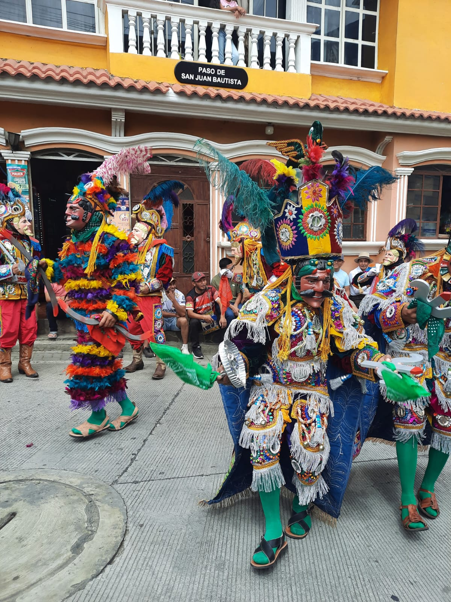
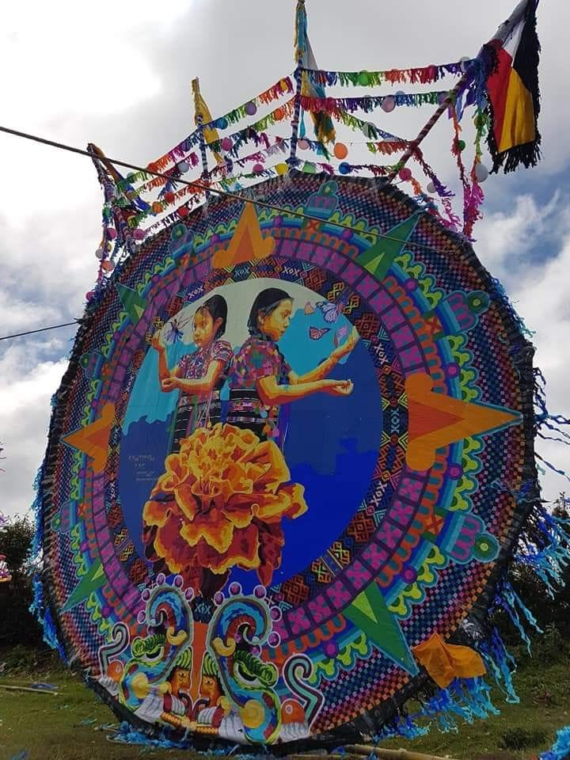
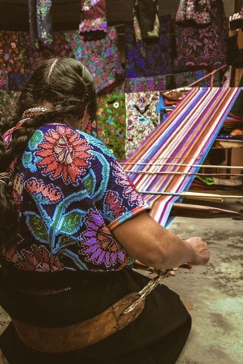
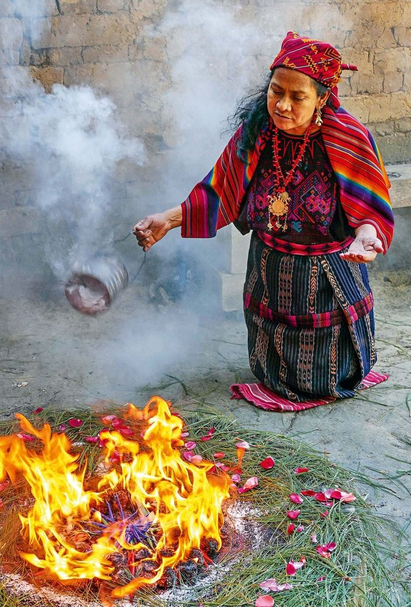
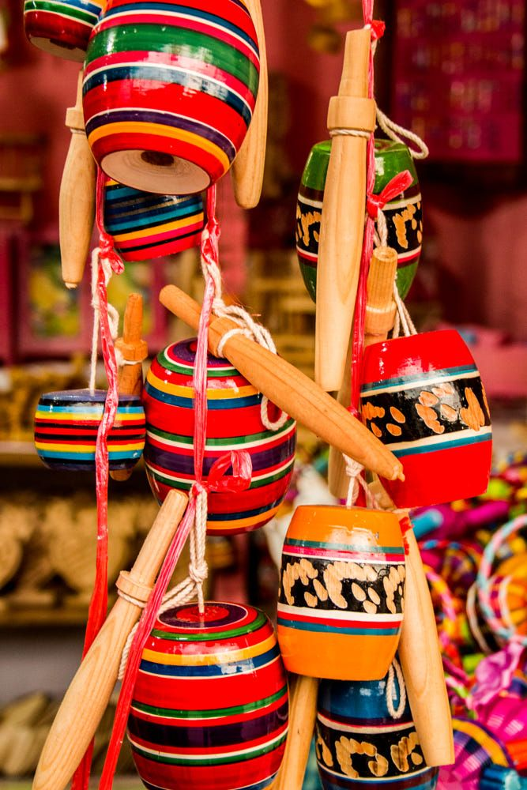
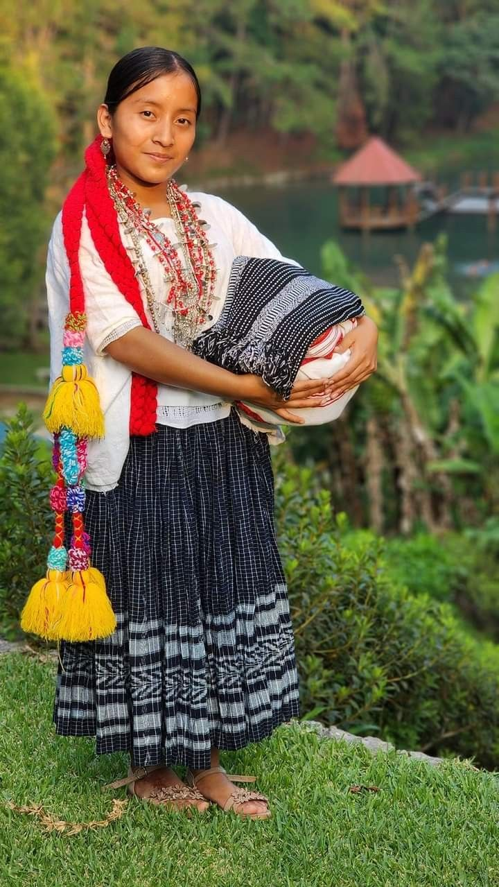
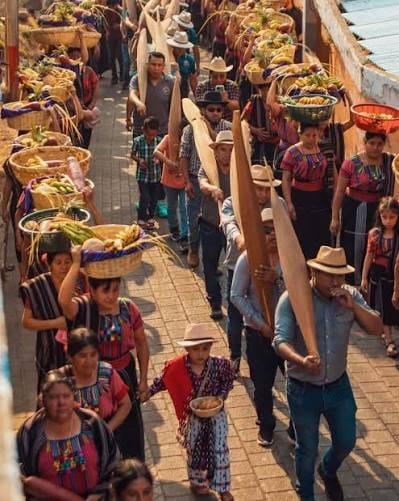
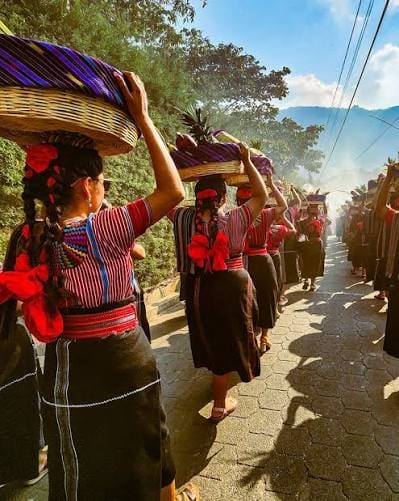
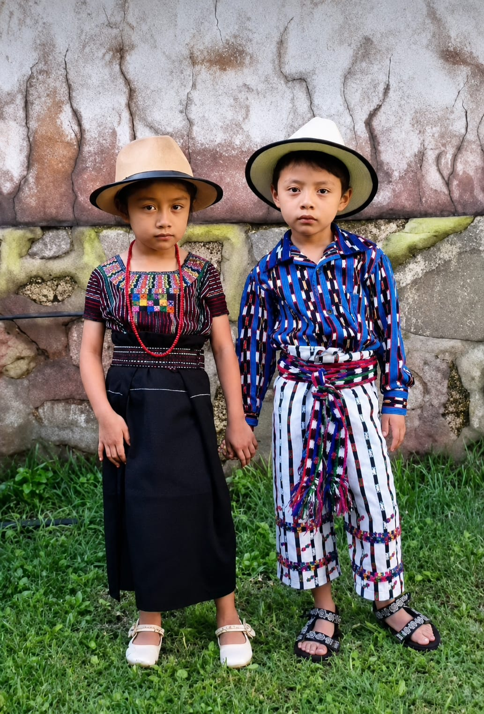
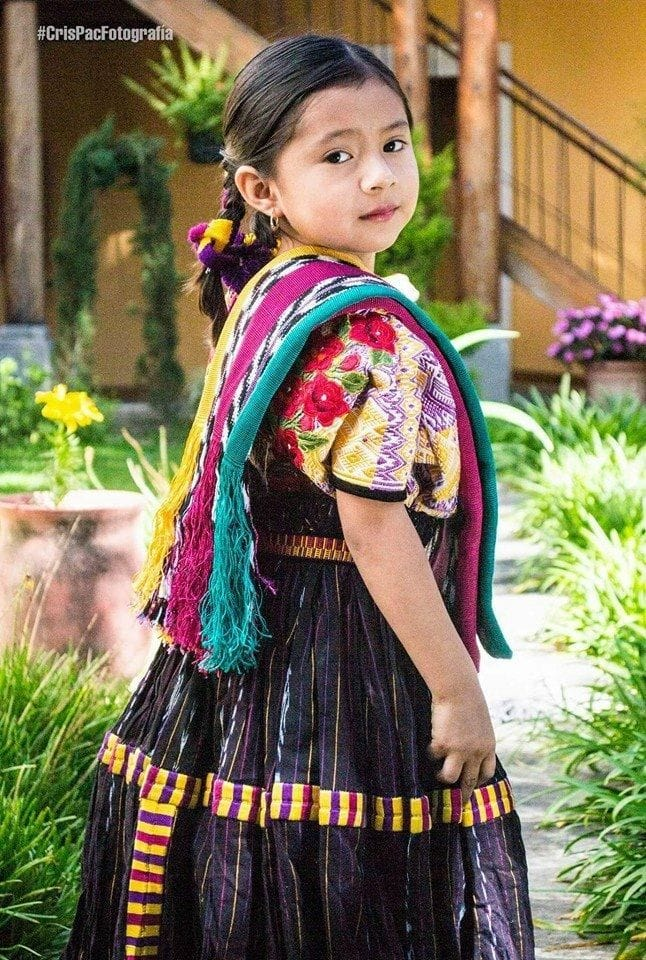

Patrimonio a orillas del lago
Belleza y tradicion reflejadas en el paisaje

Sonidos de nuestra gente
Musica tradicional que acompaña las celebraciones

Danza y Folclor
Expresión viva de la cultura y la historia local.

Arte en el Cielo
Tradición colorida de los barriletes gigantes

Manos que Tejen Historia
El arte ancestral del telar de cintura

Rituales Ancestrales
Conexión espiritual y respeto por las raíces

Artesanía Local
Creaciones de madera pintadas a mano.

Orgullo de Mi Tierra
Indumentaria que cuenta la identidad de un pueblo

Fe y Tradición
Procesiones llenas de devoción comunitaria

Costumbres Diarias
Trabajo y fortaleza de nuestra gente

Herencia Viva
Las nuevas generaciones preservando el legado

Mirada al Futuro
Juventud que abraza y enorgullece sus raíces.